Paris
Paris closed out the trip with all the essentials. Notre-Dame's towers still rise over the Île de la Cité, and just across the water, the sidewalk tables of Le Flore en l'Île keep the Île Saint-Louis unhurried. The Louvre held its crowds under a grey sky, its glass pyramid cutting through the rain. The Left Bank answered with the Palais du Luxembourg and its gardens, an almond croissant from La Maison d'Isabelle — 1st Prize for the city's best butter croissant — eaten on a bench there. Up in Montmartre, the Sacré-Cœur crowned the hill, the steps below running straight down to a carousel, and the old windmill of the Moulin de la Galette still turning behind its ivy. The Eiffel Tower rose over it all from below, and the Pont Alexandre III carried its gilded lamps across the Seine. The evening ran to a flight of beers at BrewDog, and closed, fittingly, with a bottle of Châteauneuf-du-Pape and a charcuterie spread on the balcony.
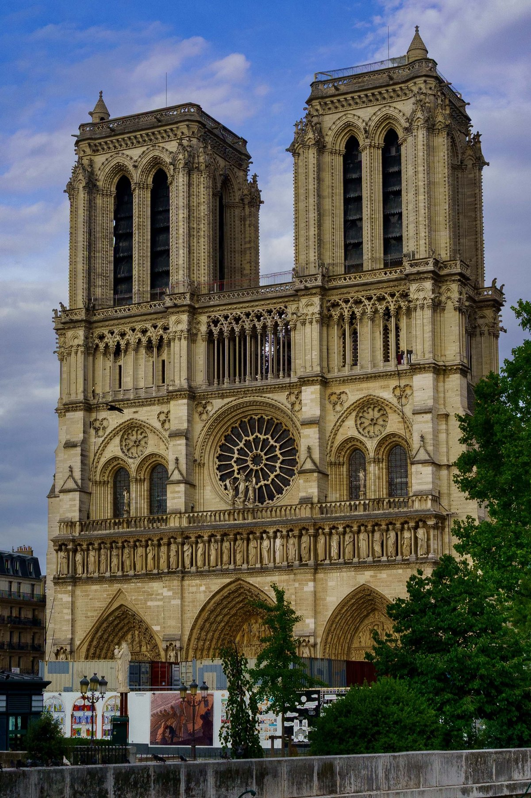
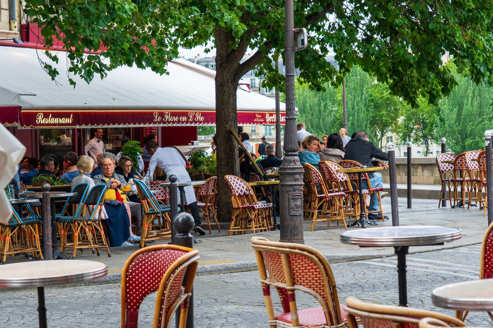
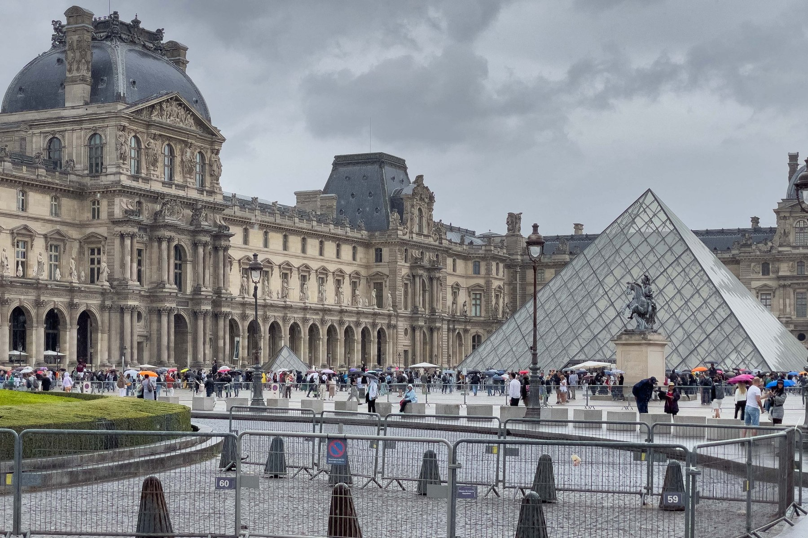
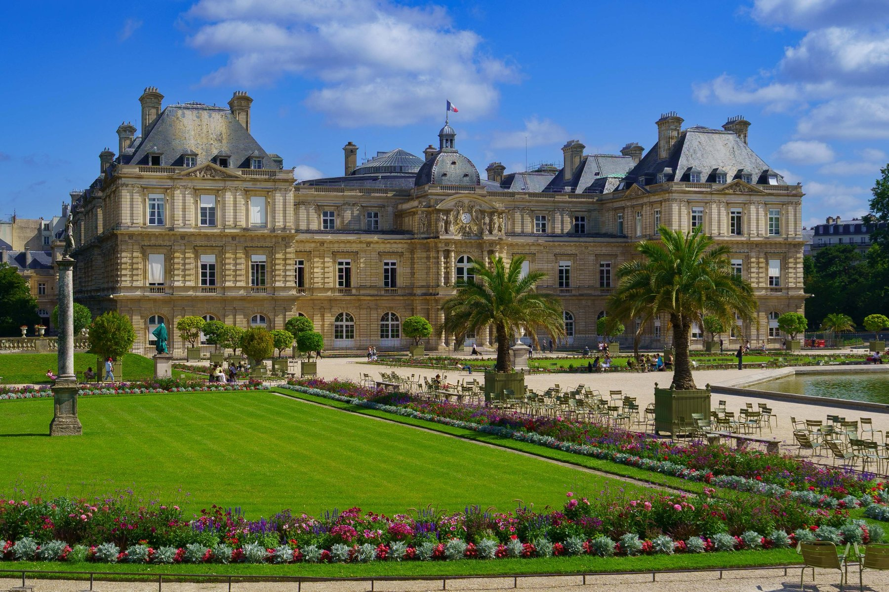
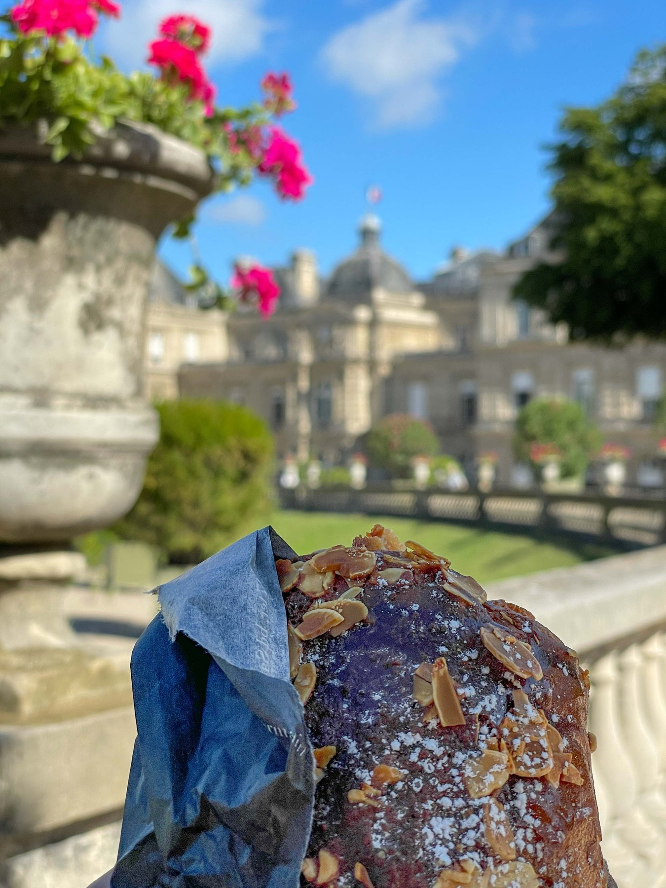
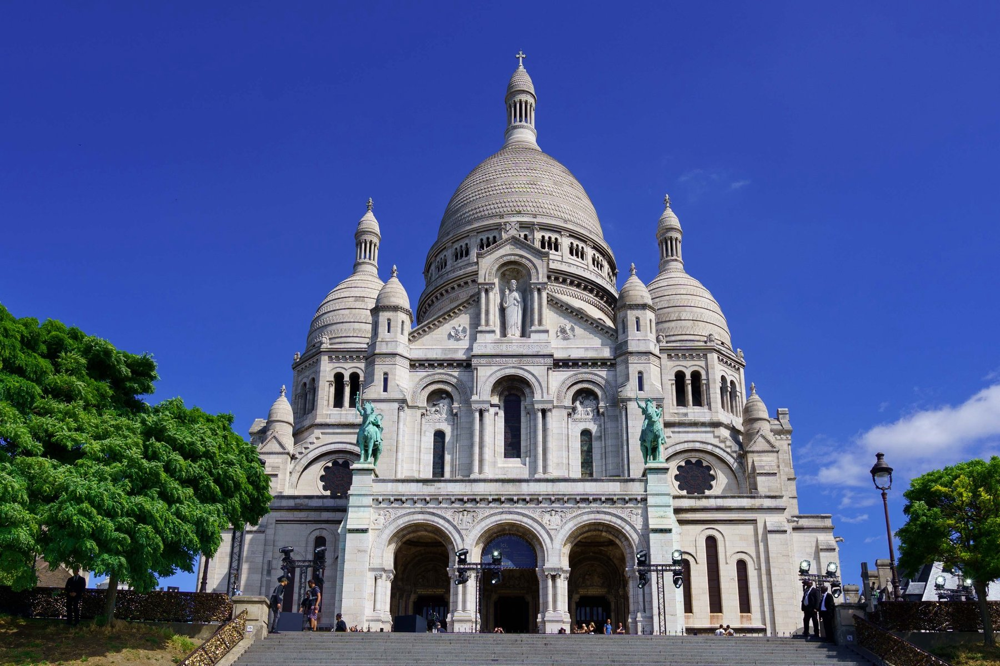
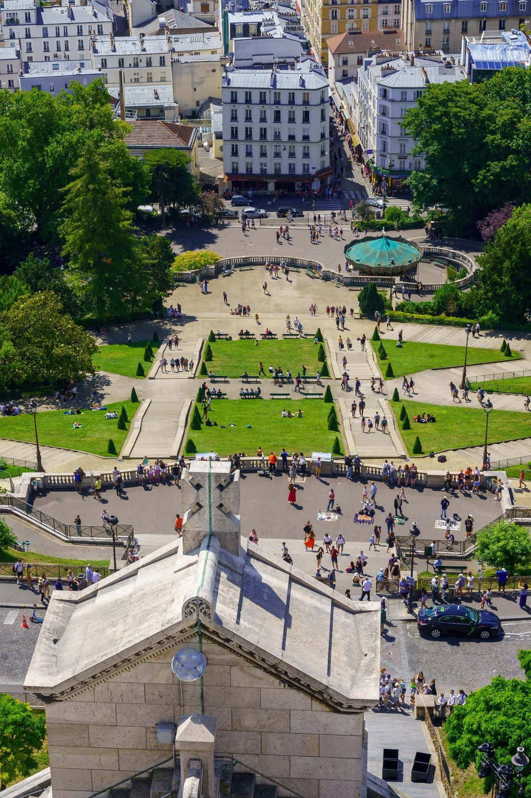
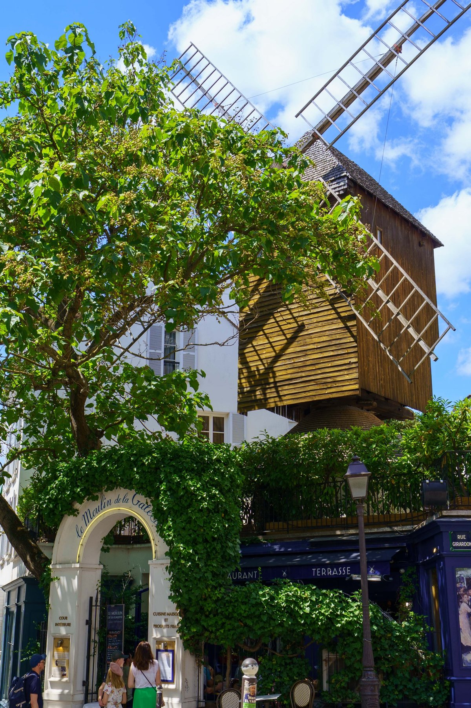
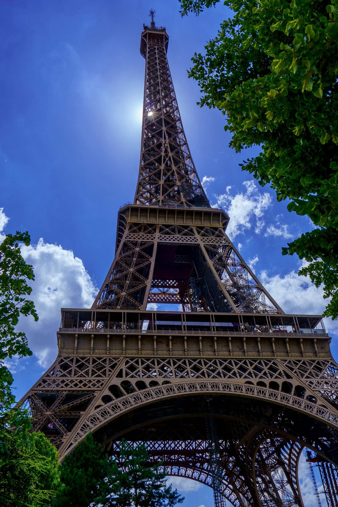
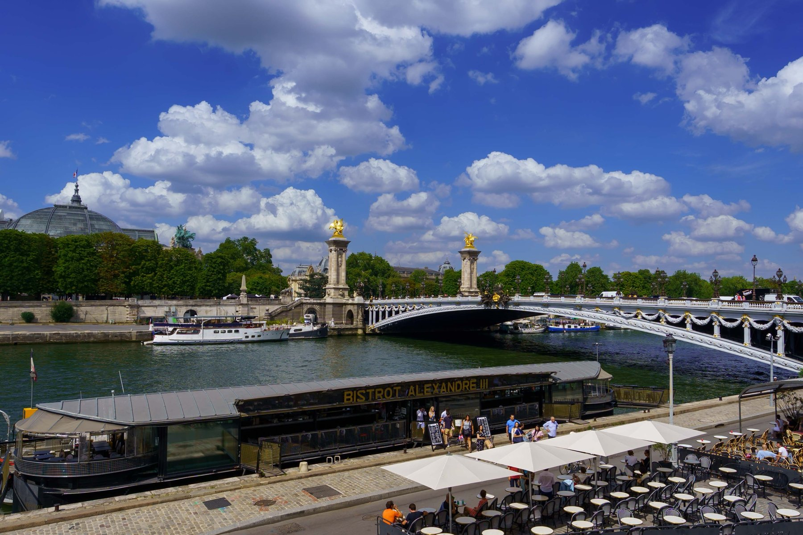
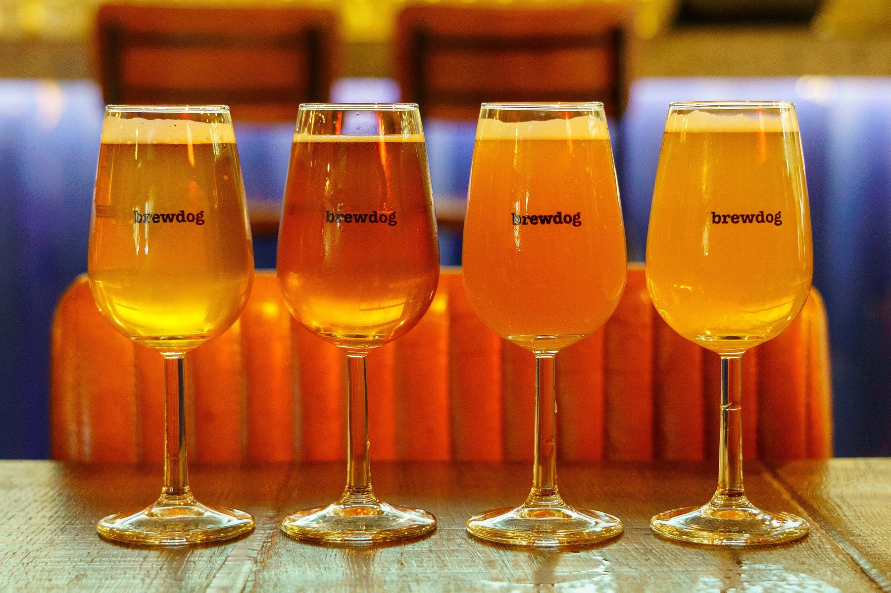
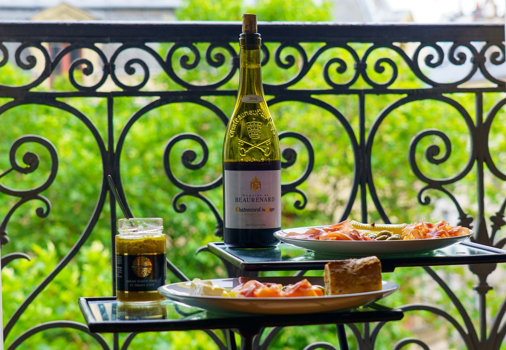